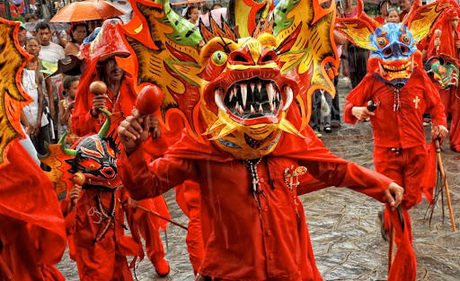
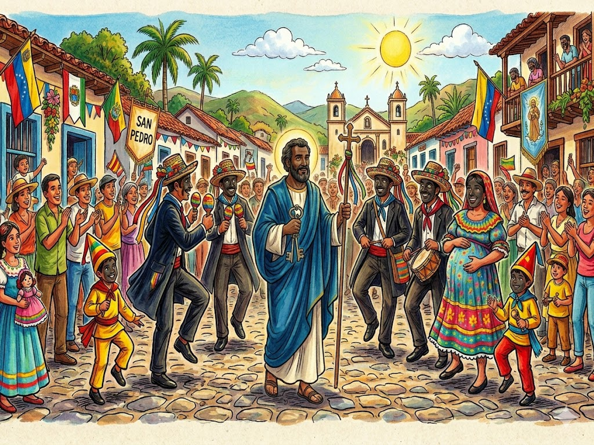
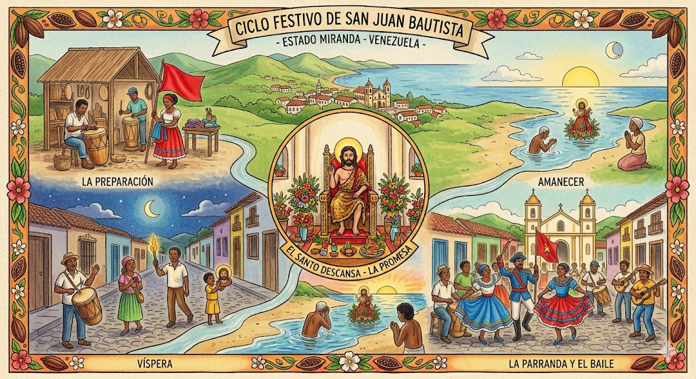
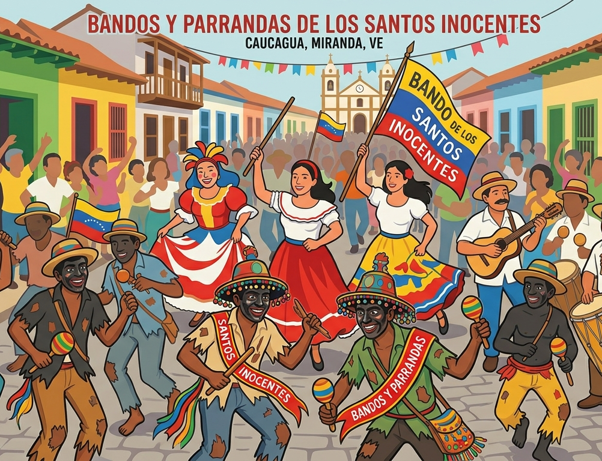
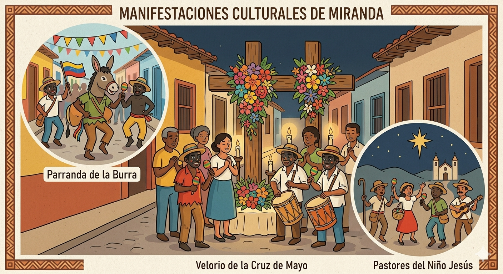

Miranda es el corazón cultural de Venezuela y la entidad con mayor número de manifestaciones declaradas Patrimonio Cultural Inmaterial de la Humanidad por la UNESCO, con un total de cinco tradiciones que reflejan su profunda riqueza histórica.
Se celebra en San Francisco de Yare durante el Corpus Christi, entre mayo y junio. Es una danza ritual donde los "promeseros", vestidos de rojo y con máscaras grotescas, se rinden ante el Santísimo Sacramento simbolizando el triunfo del bien sobre el mal. Es la hermandad de diablos danzantes más antigua de América.

Se celebra el 29 de junio en Guarenas y Guatire. Es una colorida y teatral procesión con personajes fijos como "el Abanderado" y "María Ignacia", que representa la fe y la resistencia cultural afrovenezolana. La tradición cuenta la historia de una esclava cuya hija enfermó y, tras prometerle a San Pedro bailarle todos los años si la sanaba, la niña mejoró y la promesa se ha mantenido viva por generaciones.

Se celebra principalmente en Curiepe el 24 de junio. Es una de las festividades afrovenezolanas más emblemáticas, donde el incesante repique de tambores marca el ritmo de la celebración en honor al santo. Tiene más de trescientos años de tradición y la noche previa es famosa por su magia y misticismo.

Se celebra el Viernes de Concilio, durante la Semana Santa, en Chacao. Consiste en la recolección de palmas en la montaña del Parque Nacional El Ávila para la celebración del Domingo de Ramos, manteniendo un vínculo profundo con la naturaleza y la fe. Los palmeros suben en procesión y bajan cargando las palmas que luego son bendecidas.

Se celebra el 27 y 28 de diciembre en Caucagua. Es una fiesta de más de doscientos años que se destaca por su carácter transgresor y satírico, donde el protagonismo es principalmente femenino y los hombres interpretan a los "Boleros" con sus rostros pintados. La celebración incluye comparsas, música y un ambiente de jolgorio colectivo.

El Velorio de la Cruz de Mayo se celebra durante todo el mes de mayo. Es una tradición para pedir por buenas cosechas y protección espiritual, adornando la cruz con flores y realizando vigilias con cantos, décimas y el característico sonido del tambor.
Los Pastores del Niño Jesús tienen una arraigada tradición en Los Teques. Esta festividad navideña representa la humildad de los pastores que fueron los primeros en recibir la noticia del nacimiento de Jesús, con danzas y cantos típicos.
La Parranda de la Burra está arraigada en las poblaciones de Marizapa y Caucagua. Incluye el baile de la "Burriquita" junto a otros personajes típicos como "El Abanderado" y "El Arreo", en una expresión festiva llena de colorido.

Las Ferias de la Cachapa se celebran en localidades como Ocumare del Tuy y Santa Lucía del Tuy. La gastronomía es un pilar de la identidad local, y la cachapa de maíz tierno es uno de los platos más representativos de la región, celebrada con festivales que reúnen a comunidades enteras alrededor de esta tradición culinaria.